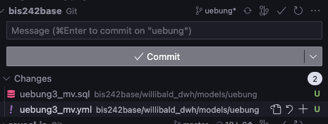

dbt Modell erstellen
branch "uebung" soll erneut genutzt werden
Im Ordner "uebung4" soll ein neues dbt Modell erstellt werden
- Positionen aller Webshop Bestellungen mit Positionspreis, Produktname, Produktpreis und Rabatt
- eigenes Namenskürzel im Modellnamen, z.B. uebung4_mv.sql
- Materialisierung: Tabelle
- Modell ausführen (am besten nur das neue Modell) und Daten anschauen
Test erstellen
Zu dem erstellten Modell soll eine kurze Beschreibung und Tests hinzugefügt werden
- uebung4_{kürzel}.yml Datei mit Beschreibung erstellen
- Test hinzufügen: Produktname muss gefüllt sein, siehe dbt Doku
- Test ausführen
Screenshot des Testergebnis im Terminal als "uebung4_test_{kürzel}.png" in den Ordner uebung4 legen
Macro erstellen
Es soll ein Macro erstellt und verwendet werden
- Macro-Datei im Ordner willibald_dwh/macros erstellen
- Es soll ein Macro geschrieben werden, das Geldbeträge in Dollar umrechnet
- Input für da Macro: Liste von Attributen
- Umrechnungsfaktro: 1,08
- Hilfestellung: Einfaches Macro, das schon existiert: willibald_dwh/macros/hashcolumn.sql
- siehe auch dbt Doku
Macro verwenden
- Nutze das macro in uebung4_{kürzel}.sql um die 3 Werte in Dollar umzurechnen
- Die Tabelle soll diese Felder haben:
- Bestelldatum
- Produktname
- Positionspreis_in_Euro
- Produktpreis_in_Euro
- Rabatt_in_Euro
- Positionspreis_in_Dollar
- Produktpreis_in_Dollar
- Rabatt_in_Dollar
- Tabelle neu erstellen (dbt run)
Änderungen in git pushen
Änderungen in VS Code überprüfen und über Command Line oder VS Code GUI pushen

Zur Erinnerung: Beispiel Command Line
# Änderungen in lokaler Staging Area hinzufügen
git add -A
# commit auf lokales Repository
git commit -m "kurze Beschreibung was geändert wurde"
# pushen
git push
Anschließend auf github.com überprüfen ob die Änderungen angekommen sind